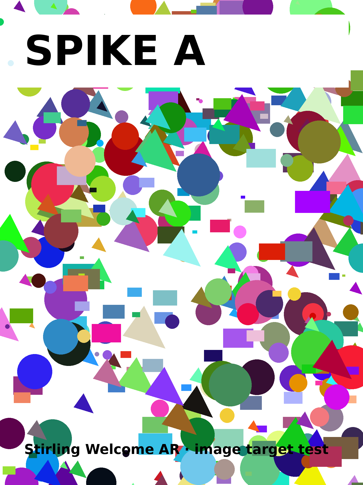
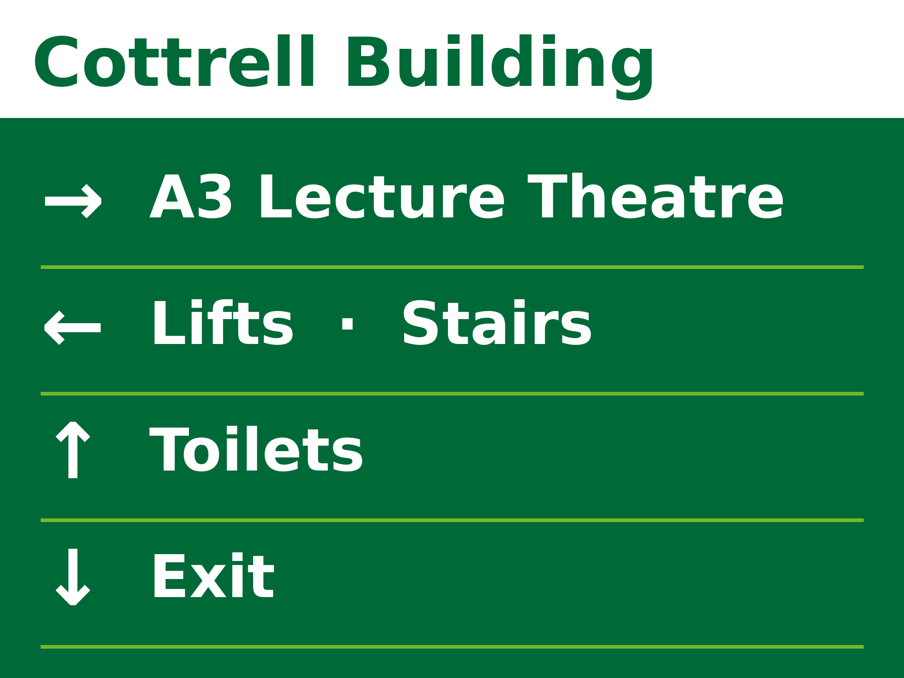

Print at 100% (no "fit to page"). Sign A: A4 portrait, 18 cm wide. Sign B: A4 landscape, 24 cm wide. Measure the printed widths with a ruler; if they differ, put them in the spike link: ?wA=0.18&wB=0.24.
?wA=0.18&wB=0.24

